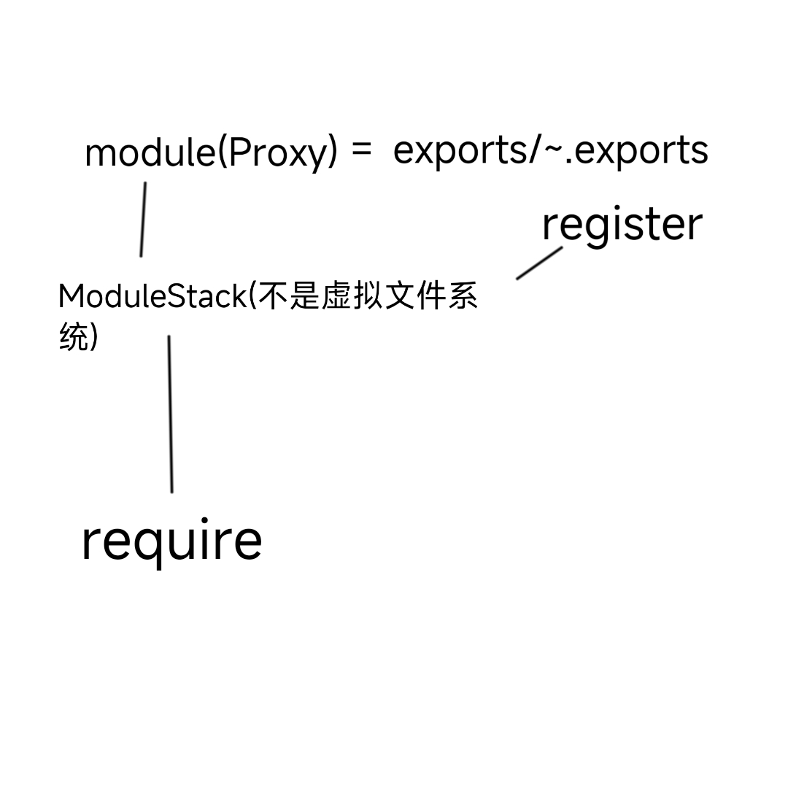

<doctype html>
<html>
  <head>
    <meta charset="UTF-8">
    <meta name="viewport" content="width=device-width, initial-scale=1, maximum-scale=1">
    <title>Rubidium-NodeLoader Demo</title>
    <meta name="description" content="A tiny front-end node module loader.(< 1kB compressed，exclude stdlib)">
    <script src="./node.js"></script>
    <script src="./stdlib.min.js"></script>
    <style>
      textarea, pre {
        width: 100%; height: 14em;
        background-color: #EEE;
      }
    </style>
  </head>
  <body>
    <h2>Rubidium-NodeLoader Demo</h2>
    <p>Try require(something) in your browser.<br>尝试像Nodejs一样Require(2233)在前端)<br><a href="https://github.com/Love-Kogasa/Rubidium-NodeLoader">Github</a></p>
    <textarea id="code">Loading...</textarea>
    <button id="run">RUN 运行</button>
    <pre id="output" style="overflow-y: auto">Output 输出</pre>
    <h3>ModuleStack 模块栈</h3>
    <div id="modules">Loading...</div>
    <script src="app.js" require="app"></script>
    
  </body>
</html>